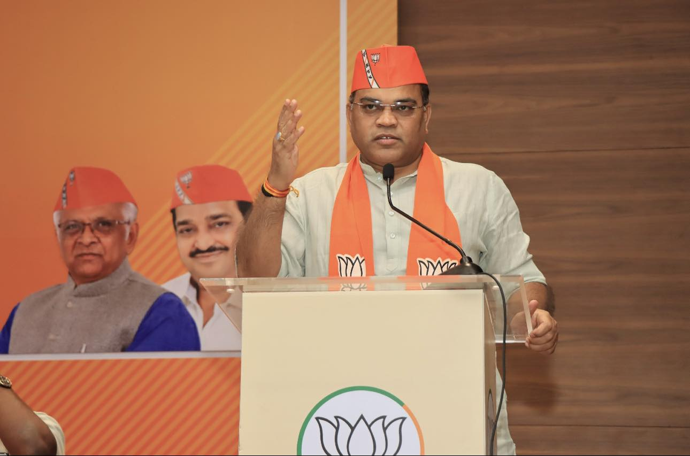

Introduction

About Ratnakar
Ratnakar is the current State General Secretary (Organisation) of Bhartiya Janata Party, Gujarat. Prior to this, he held the same office in the BJP Uttar Pradesh Unit for a period of about eight years.

Ratnakar is the current State General Secretary (Organisation) of Bhartiya Janata Party, Gujarat. Prior to this, he held the same office in the BJP Uttar Pradesh Unit for a period of about eight years.